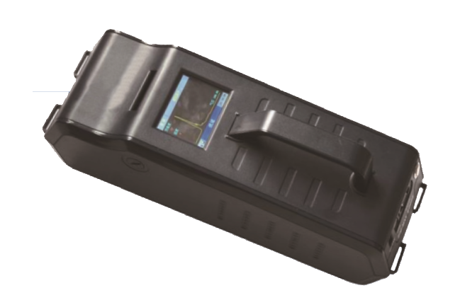

|  |
Product Instruction
EI-HE300 Handheld Explosive Trace Detector is a
lightweight, fast, accuracy and extremely sensitive detection
device for trace explosives based Ion Mobility
Spectrometry（IMS）tecnology, which is independently developed. It
has many advanced functions such as optional sensitivity level,
hot-start, suitable for highlands advantages as easy operation,
low-cost consumables and convenient maintenance.
EI-HE300 has been applied many patents and inspected by the
National Quality Supervise Center of Safety Protection and Alarming
System, it has been widely applied for airport, customs, frontier
defense, police, national defense, smuggling suppression, fire
protection and army department etc.
|
Main Features
High sensitivity and detecting ng to pg level explosives
Three optional sensitivity , with hot-start function
Portable and lightweight, 3.5 kg in total
3.5” color TFT display, rich interface prompts, easy to use
Fast response and give analysis result within 8 seconds
External vacuum sampling unit for effectives sample
collection
Environmental adaptability ,used normally in highlands
Open databases, remote online service, use without worry |
 |